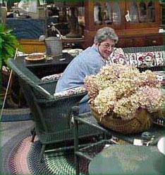

|
|
Mid-Coast FINE ANTIQUES of Maine is a family business, owned by Francine and Benjie Grant. Francine got her start in the antique business as a recorder for an auctioneer in 1960, and readily acquired an interest in antiques. By 1962 she was buying and selling antiques - and has never looked back.
She and Benjie were married in 1977, with Benjie acquiring the love of antiques from Francine rather quickly while still working full time in the family’s dairy business. With Francine's assistance, Benjie has collected numerous dairy related antiques including a selection of horse drawn dairy advertising wagons. A portion of his collection is on display at the shop for all to enjoy.
Shortly after the marriage, Francine and Benjie purchased a home in Holden, a cape built in 1802. We totally restored our home, exposing the charm of the house to its original period. The house has the distinction of being the oldest standing house in Holden. At this juncture the name of Francine's antique business was "1802 House Antiques".
As Francine's business grew we found ourselves in need of additional space. This led us, in 1984, to the purchase the former Pinkham's General Store building, also located in Holden. Pinkham's General Store was built in 1884 and truly had wonderful Maine country charm. It, by the way, is the oldest commercial standing building in the town of Holden. This building had been severely neglected since it closed as a general store in the early '50's, but with a lot of TLC we restored this building back to its original state, starting with the basement, followed by the 1st and 2nd floors. Upon completion of the rehab we opened Francine's greatly expanded shop in 1985, with a new shop name, "Country Store Antiques".
By 1998 we both realized that if we were going to stay in the business for another 20 years, we needed to make one final leap, that being to an even larger shop, and more specifically, a shop on one level. We commenced building a new facility in the summer of 2000 with the majority of the completion being finished by December of 2000.
Neither previous shop names were appropriate for our new, greatly expanded facility, so consequently we opted for a new name, "Mid-Coast FINE ANTIQUES of Maine".
We were lucky to have had the opportunity to make the "final move" and we are both extremely pleased and excited with our new location, it being 1.5 miles to the east (towards Bangor) from the former Country Store Antiques location, and yes, we are still in Holden.
If you have a chance, stop by, say hello, and enjoy Francine's decorative flair of room arrangements of FINE ANTIQUES.
DURING THE 2022 SEASON THE RETAIL SHOP
WILL BE OPEN ONE DAY PER WEEK
THURSDAYS, 9 AM TO 2 PM
FRANCINE WILL BE DOING
FREE APPRAISALS ON THURSDAYS
MASKS REQUIRED
ALSO ON THURSDAYS FRANCINE WILL BE
BUYING GOLD & SILVER JEWELRY
& STERLING SILVER FLATWARE
THANK YOU FOR YOUR UNDERSTANDING
STAY HEALTHY!
Fine Period
Furniture: Queen Ann Thru American Country
We Are
Always Interested In Buying Single Items to Complete
Estates of
Quality Furniture, Antique Accessories and Collectables
|
|